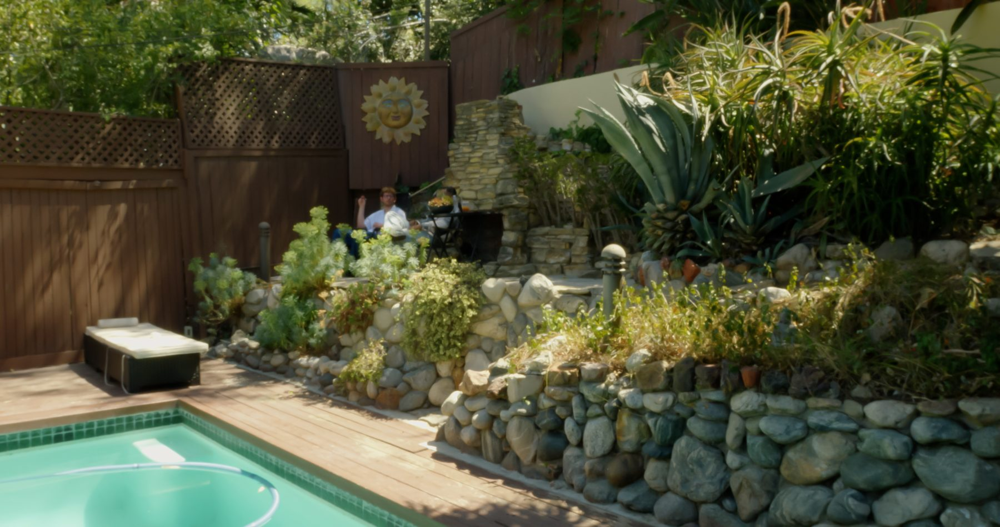
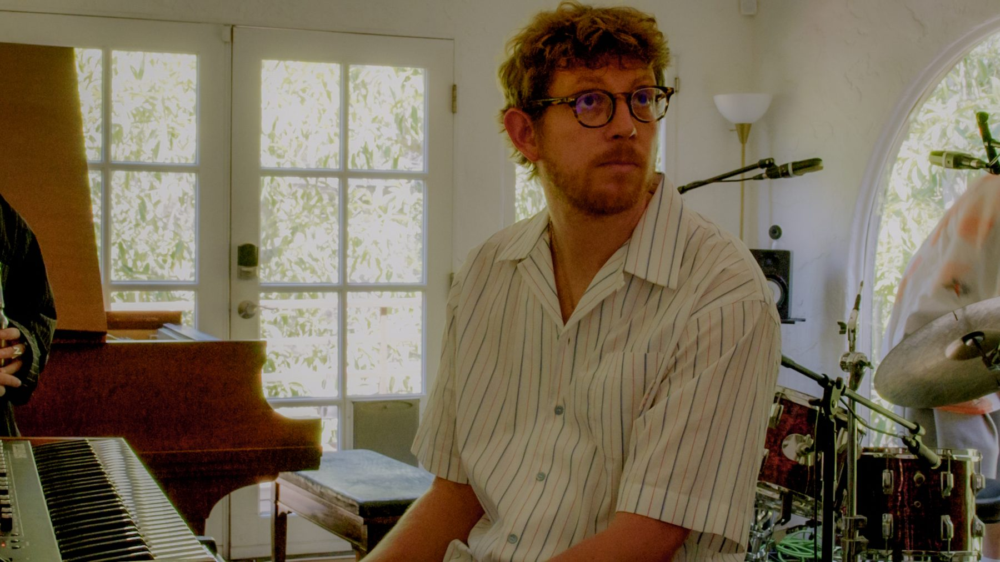
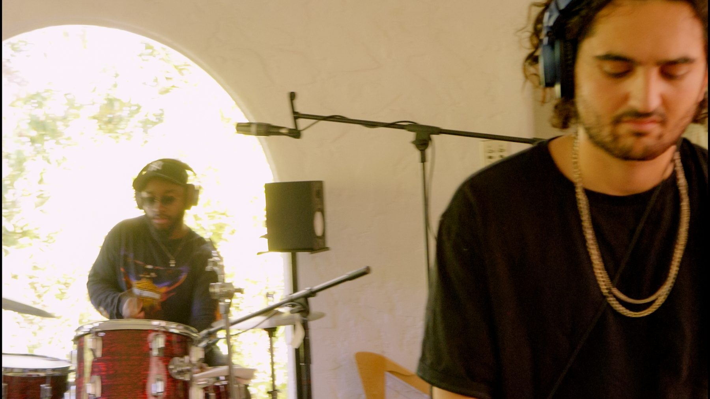
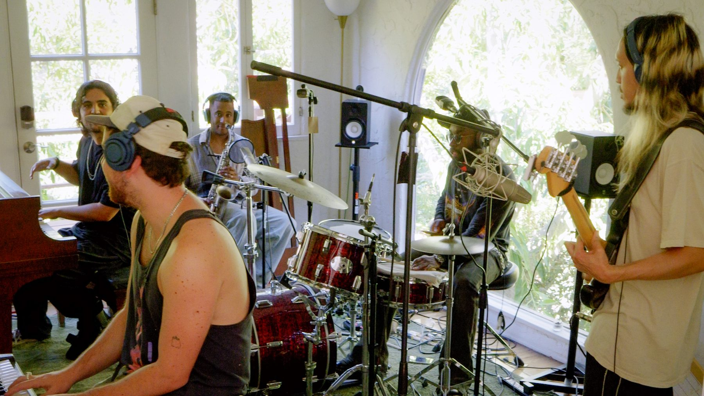
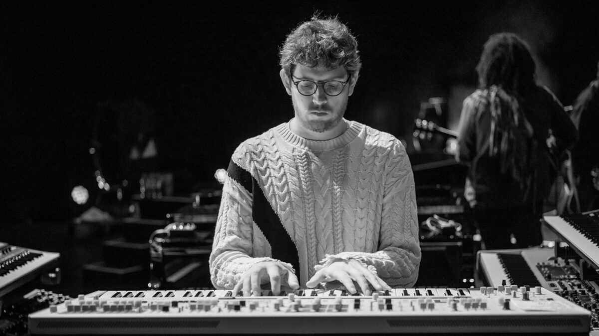

An instrumental performance series with multi-instrumentalist Elijah Fox — filmed at his home studio in the Los Angeles hills. Each episode, a guest instrumentalist sits in with Elijah and his players for an original, improvised jam.


Elijah leads a rhythm section from the keys, and each episode features a well-known contributing player. An 8–20 minute living-room jam of original music, intercut with behind-the-scenes hang footage — improvised, filmed documentary-style with professional sound and multi-camera coverage.

Elijah's house in the Los Angeles hills has become a hub for high-level session musicians. His performances in this live-instrumental lane have pulled views into the millions, and his posts routinely cross 50–100K. Every track is original and improvised — nothing to license, no catalog to clear, and each episode yields two assets: the video, and a track that ships to DSPs.

Seeking partners and sponsors — product placement, pre-roll "Presented by" credits, watermark branding, and revenue sharing available.